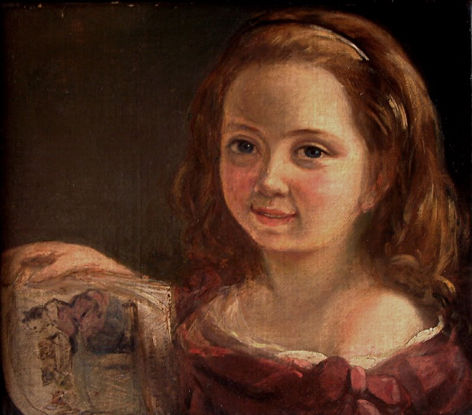

Augusta Ada King, Condessa de Lovelace, nasceu a 10 de dezembro de 1815, mas apenas um mês após o seu nascimento, devido a desentendimentos conjugais, a sua mãe abandonou a casa da família enquanto Lord Byron dormia, levando consigo a filha recém-nascida. Mais tarde, pediu o divórcio de Byron, aparentemente depois de saber que a meia-irmã do marido, Augusta Leigh (que deu o nome à criança), era também sua amante. Três meses depois, o próprio Byron teve de deixar Inglaterra, fugindo de credores e de numerosos escândalos. Ada nunca mais voltou a ver o pai, pois a mãe assegurou a sua custódia ameaçando Byron de que divulgaria os seus casos extraconjugais.

Ada fue una niña enfermiza y a los siete años contrajo una enfermedad que la tuvo postrada en cama durante varios meses. A los catorce, sus piernas quedaron paralizadas de forma temporal como consecuencia de un grave sarampión, lo que hizo que la joven dedicara mucho tiempo al estudio y a la lectura. Su madre se esforzó en darle una esmerada y estricta educación, que incluía música, francés y matemáticas. Asimismo, quiso que su hija tuviera una formación científica, y para ello contrató a la prestigiosa matemática y astrónoma escocesa Mary Somerville. Para estimular aún más el interés de Ada por la ciencia y la tecnología, madre e hija viajaron por las regiones más industrializadas de Inglaterra, donde la muchacha pudo admirar las máquinas más novedosas como el "telar de Jacquard", un telar mecánico inventado por Joseph Marie Jacquard y que ya en aquella época utilizaba tarjetas perforadas para funcionar. Su elevado estatus social le permitió relacionarse con prestigiosos científicos como Andrew Crosse, David Brewster, Charles Wheatstone, Michael Faraday y con el novelista Charles Dickens.
LOS PRIMEROS PASOS HACÍA LA PROGRAMACIÓN
Al cumplir los 18 años, y como cualquier otra joven aristócrata de su época, Ada empezó a asistir a fiestas de la alta sociedad y en una de ellas, organizada por su tutora Mary Somerville, conoció al matemático Charles Babbage, que había diseñado una calculadora mecánica capaz de calcular tablas de funciones numéricas por el método de diferencias. También diseñó, aunque nunca la llegó a construir, una máquina analítica para ejecutar programas de tabulación o computación. Por estos inventos, Babbage es considerado uno de los pioneros en concebir la idea de lo que hoy podríamos considerar una computadora. El invento de Babbage entusiasmó a Ada, y lo más importante, la joven pensó que aquel invento demostraba que un día no muy lejano las máquinas harían posible cambiar la vida de las personas.

UNA MUERTE PREMATURA
A pesar del intento de Babbage por convencer al gobierno británico para que financiara la construcción de su máquina y dar un salto tecnológico que sin duda hubiera cambiado el siglo XIX, el matemático murió en la pobreza después de dilapidar su fortuna. Tras el rechazo profesional de Babbage, Ada Lovelace ya no volvió a trabajar, y atormentada por su enfermedad y su adicción a los opiáceos buscó refugio en el juego y en los brazos de numerosos amantes, lo que le costó gran parte de su fortuna y su matrimonio. Ada murió el 27 de noviembre de 1852 a causa de las sangrías provocadas por los médicos de la época en un intento de curar el cáncer de útero que padecía. Tenía 36 años, la misma edad que Byron al morir, siendo su último deseo ser enterrada junto al padre al que nunca conoció.